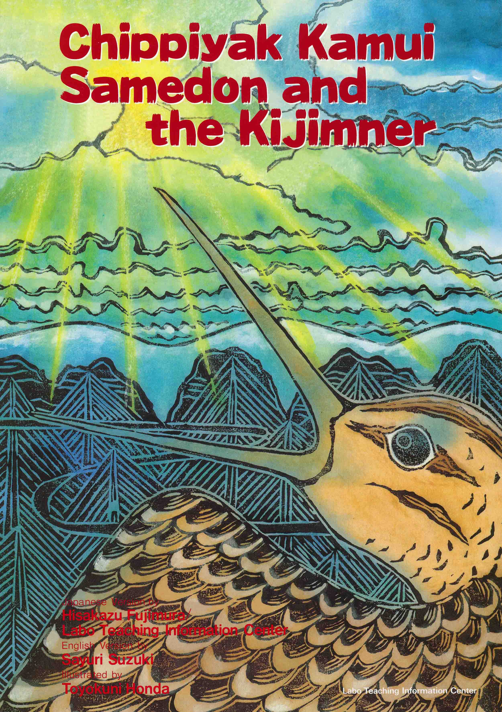

北海道地区大学生年代表現活動

『Chippiyak Kamui チピヤㇰカムイ』（SK25）
あらすじ
天界の神々からの言いつけで人間たちが下界で暮らせるかどうかを確かめにきたオオジシギは、下界の美しさ・楽しさに夢中になりその言いつけを忘れてしまう。約束を守らなかったオオジシギは果たしてどうなってしまうのか。 神様（カムイ）と共に生きてきた北海道のアイヌの人たちが、古くから語り継いできた物語です。
北海道地区です！地区として6年ぶりとなる「わかもの」の舞台。 わたしたち6人にとっては最初で最後のわかものフェスティバルです。 『 チピヤㇰカムイ』は約10分という短いライブラリですが、自然の壮麗さと神聖さ、アイヌの心、そして共生の大切さという、わたしたちがこの日本という土地で暮らしていく上で忘れてはならない教えがたくさん詰まったお話です。 北海道地区として最後の雄姿、豊かな北海道の魅力たっぷり、全身でお届けします！ オオジシギも言いつけを忘れてしまう程の美しい自然を想像しながら、情景表現とその一体感をぜひお楽しみください。